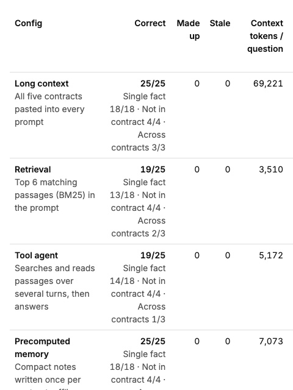
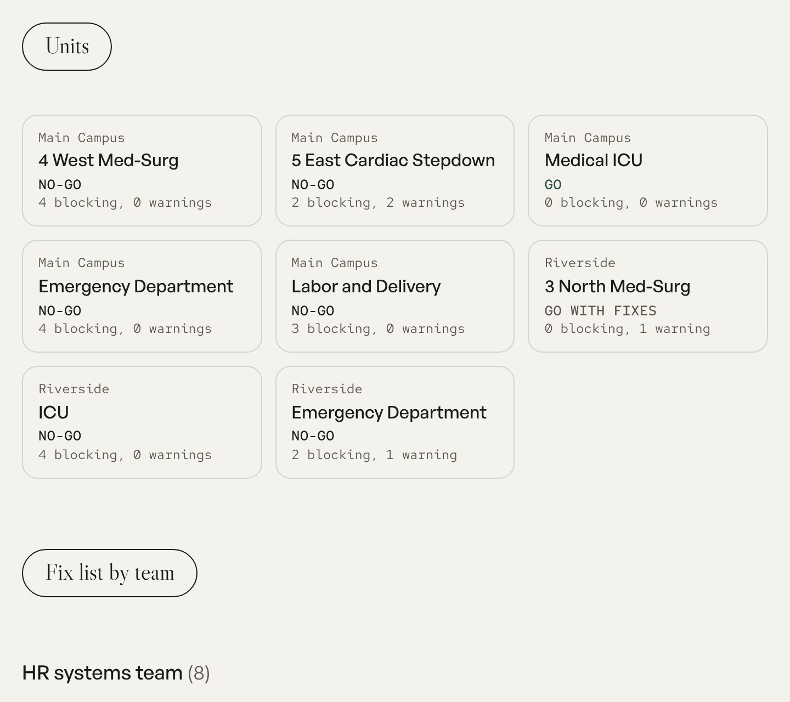
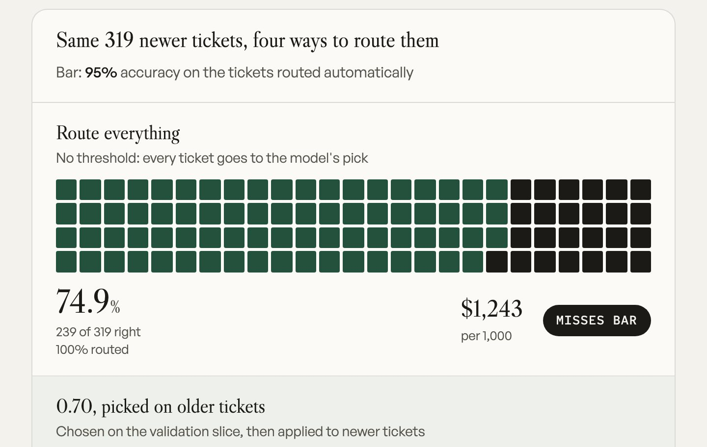
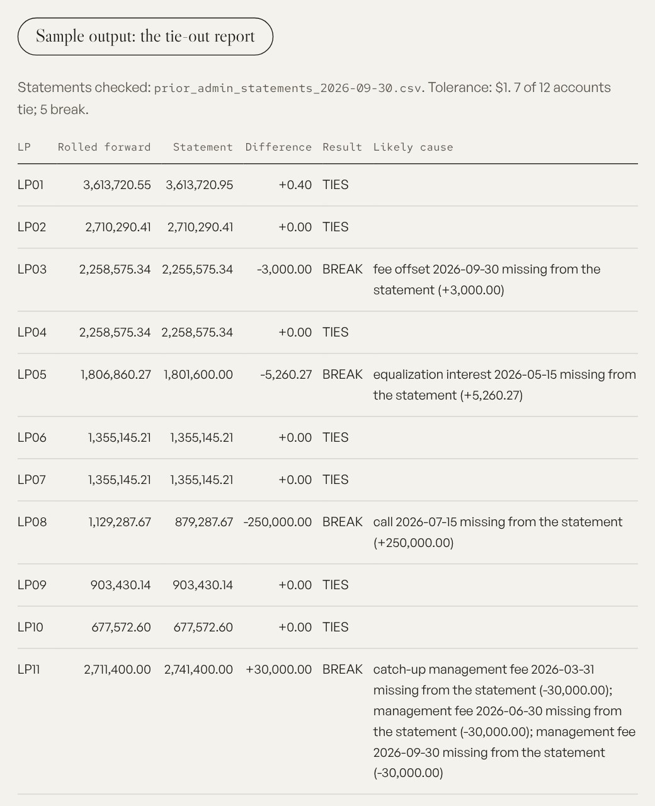

Hello, I care about making sure AI agents go live tested and ready for real customers.
I've spent the last two years helping enterprise clients get AI systems live, most recently designing the rubrics that judge agent output at Surge.
Selected builds
Each one is a small, working answer to one deployment problem. All use synthetic or public data.
 golive-gateLive demo The pattern behind every build here as one open-source Python package, CLI and GitHub Action: eval cases, judge checks, and a go-live gate that answers go, partial or no-go.
golive-gateLive demo The pattern behind every build here as one open-source Python package, CLI and GitHub Action: eval cases, judge checks, and a go-live gate that answers go, partial or no-go.
 Booking eval harnessLive demo A 25-case eval and go-live gate for an agent that books field-service jobs.
Booking eval harnessLive demo A 25-case eval and go-live gate for an agent that books field-service jobs.

Contract memory harnessLive demo Four ways to give an agent memory over a contract bank, and what breaks after an amendment.
Go-live readiness checkLive demo Unit-by-unit go or no-go for a hospital staffing rollout, with fixes grouped by owning team.
Ticket routing evalLive demo Picks the confidence bar for auto-routing support tickets, with the cost per 1,000 tickets.
Capital account tie-outLive demo Ties every LP capital account before a fund admin switch and names the likely cause of each break.The path so far
- Surge LabsProduct Operations ManagerApr to Sep 2026
- MercorStrategic Project Lead (contract)Mar to Apr 2026
- Persona IdentitiesField Product EngineerJan to Mar 2026
- Capgemini InventAssociate Technical ConsultantFeb to Dec 2025
- NYU SternB.S. in Business, Data ScienceSep 2021 to Dec 2024
More builds
Evals and go-live gates for agents
- Front desk call gate30 guest calls graded by rules and a Claude judge, go or no-go in CIDemo
- Appointment agent evalSwitch off any check and see which cases catch itDemo
- Voice agent bake-offMoves a voice screener to a new model: replay, 10%, then 50%Demo
- Home sale file pre-reviewPre-reviews home sale files for compliance, with a 25-case evalCode
- Sales coach moment test25 moments: does a live-call coach suggest the right next step?Code
Monitoring live data
Agents and agent studies
- Agent cold-start studyCan a fresh coding agent set up an email inbox on its own? 8 runsDemo
- Prompt to quoteA rep's plain-English deal becomes a priced quote with its approvalsDemo
- Text reorder agentText “the usual,” confirm, pay; anything else goes to a personDemo
- Intake to PO agentA plain-language purchase request taken to a PO decisionCode
Rollout and data-readiness checks
- Robot cabling gateDecides when a cabling robot can work without a tech watchingDemo
- Migration cutover gateNothing loads until counts, balances and trust totals tieCode
- Margin bridge tie-outRebuilds a quarter's gross-profit bridge and finds the hidden driverDemo
- Sales tax return checksRecomputes each return and blocks or flags it before filingDemo
Show 7 moreShow fewer
- AP auto-forward gateDecides which jobs have earned AI invoice auto-forwardingDemo
- Interview stall monitorFlags stalled scheduling threads and unused seats after a rolloutDemo
- Carrier sourcing scorecardScores a sourcing agent against what reps really bookedDemo
- Carrier onboarding checksChecks carriers against public FMCSA data before entryCode
- Partner deliverable QAHolds a partner's discovery work to standard firstDemo
- Contract obligation trackerPulls notice dates; a person verifies each fieldDemo
- API integration checkerFinds common integration gaps from the command lineDemo
Hiring for AI deployment or agent work? I’d like to hear about it.
© 2026 Pranav GudiseBack to top